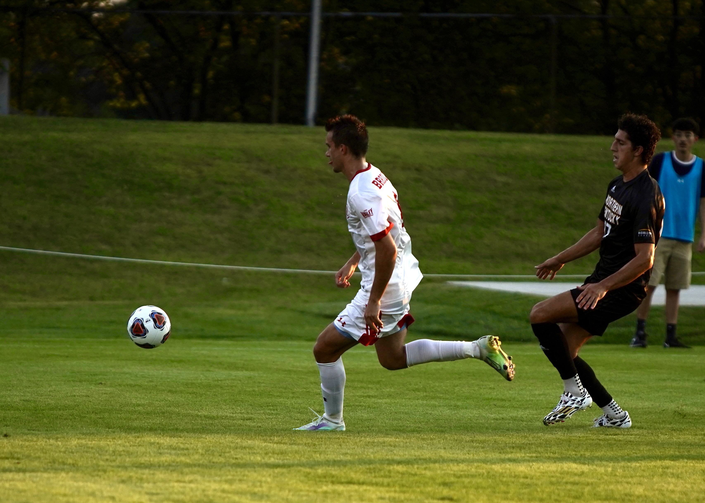
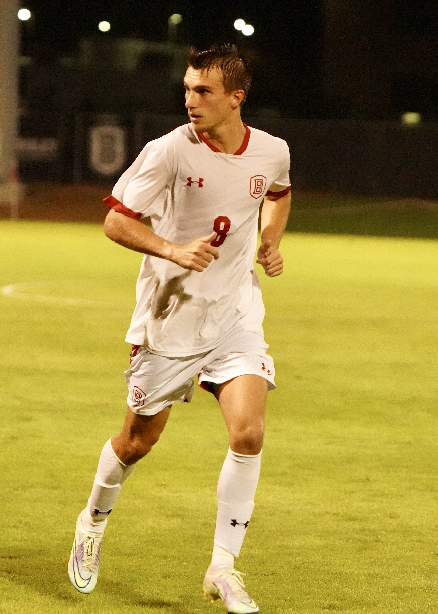

Please check out the below link to see information on my soccer team at Bradley University!
Bradley Soccer Homepage
I have played soccer since the time I was in 1st grade, and it has become a huge part of my life. While I will be done playing
at the end of this fall, I will be helping to coach the University in my hometown upon my graduation. Whether it is playing Soccer
or watching it, the sport always seems to find a way in to my life. Enjoy a few pictures of me playing soccer below!
 Taken at The University of Kentucky last Spring.
Taken at The University of Kentucky last Spring.

Versus NKU at Shea Stadium my senior year.
